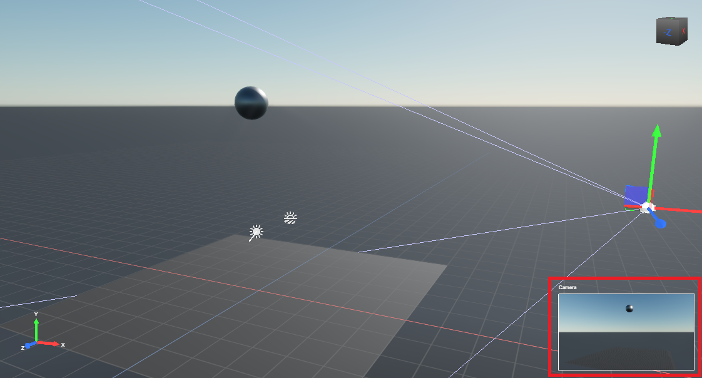

Create a bouncing ball
Beginner Designer
In this tutorial, we'll use the static and body components to create a ball bouncing on a floor.
1. Create a new project
Start a New Game project.
The default scene comes pre-loaded with five entities: Camera, Directional light, Skybox, Ground, and Sphere. We're going to add physics components to the Ground and Sphere entities.
2. Add a Static Component
Let's begin by adding a static collider component to the Ground entity. A static component is a physics object that doesn't move. Typical static component are walls, floors, large rocks, and so on. In this case, the static component will give the ball something to bounce on.
Select the Ground entity.
In the Property Grid, click Add component and select Static Collider.

Set the collider shape to match the shape of the entity. To do this, in the Property Grid, expand the Static Component to view its properties.
Next to Colliders, click
 (Add) and select Box Collider.
(Add) and select Box Collider.
This adds a static collider to the ground, so the ball has something to bounce off.
Set the
Sizeproperty toX: 10, Y: 0.1, Z: 10to create a flat plane from this box
3. Add a Body Component
Next, we'll add a body component to the sphere. A body is a physics object that moves — perfect for our bouncing ball.
In the Scene Editor, select the Sphere entity.
In the Property Grid, click Add component and select Rigidbody.

Just like we did for the Ground entity, set the collider shape to match the entity. To do this, in the Property Grid, expand the Body Component to view its properties.
Next to Colliders, click
(Add) and select Sphere.
4. Position the ball
Let's position the sphere so it starts in midair and falls to the ground.
Select the Sphere entity.
In the Property Grid, under Transform, set the Position to:
X: 0, Y: 6, Z: 0This places the ball in midair above the ground.
5. Position the camera
Now we'll move the camera to give us a good view of the scene.
Select the Camera entity.
In the Property Grid, under Transform, set the Position to:
X: 11, Y: 3, Z: -4You can see preview the camera view in the Camera preview in the bottom-right of the Scene Editor.

6. Set the restitution
Let's see what the scene looks like so far. To run the project, press F5.
The Sphere (body) responds to gravity and falls. The Ground (static collider) breaks its fall. But there's no bounce effect yet.
To create a bounce effect, we need to change the Spring Frequency and Spring Daming Ratio of the Sphere.
Note
Bepu internally uses speculative contacts which does not play well with traditional coefficient of restitution. Instead, bounces can be implemented through contact constraint springiness, this specificity mean that bounces actually take place over multiple simulation steps instead of on contact. This may be counter-intuitive for users accustomed to other engine's restitution-based bounciness.
- Bounciness is dominated by
Spring Damping Ratio; setting it to zero minimizes energy loss on impact. - Increasing
Spring Frequencycan make impacts less bouncy when. This happens because the integration rate becomes too slow to represent the motion, and it gets damped away. Increasing the substepping rate or using more timesteps preserves bounciness with higher frequencies.
Let's set the Spring Frequency and Spring Damping Ratio of the Sphere.
Select the Sphere entity.
In the Property Grid, under Body, set the
Spring Frequencyto 3 andSpring Damping Ratioto 0.
To see how this changes the physics, run the project again (F5). This time, the ball bounces on the ground before coming to a stop:
Now that we've created a bouncing ball, we can use it to learn to Script a trigger.